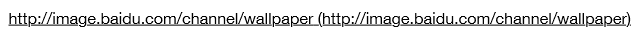
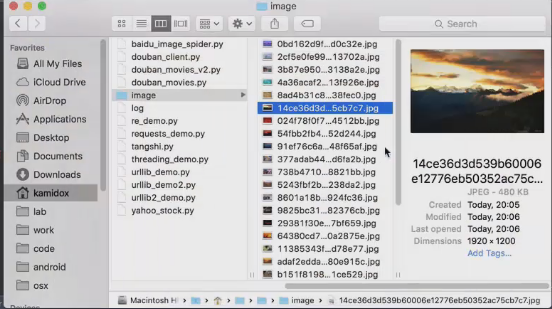

数据分析：

爬虫实现：
是从百度的图片网站上去下载这些壁纸下来
# -*- coding: utf-8 -*-
import requests
import urllib
import os
def _download_image(url, folder=’image’):
if not os.path.isdir(folder):
os.mkdir(folder)
print('downloading %s' % url)
def_(fname)s:
return os.path.join(folder,os.path.split(url) [1])
urllib.urlretrieve(url, _filename(url))
def download_wallpaper():
# 数据分析
# http://image.baidu.com/channel/wallpaper#%E7%83%AD%E9%97%A8%E6%8E%A8%E8%8D%90&%E5%85%A8%E9%83%A8&6&0
url = 'http://image.baidu.com/data/imgs'
params = {
'pn': 41,
'rn': 100,
'col': '壁纸',
'tag': '国家地理',
'tag3': '',
'width': 1600,
'height': 900,
'ic': 0,
'ie': 'utf8',
'oe': 'utf-8',
'image_id': '',
'fr': 'channel',
'p': 'channel',
'from': 1,
'app': 'img.browse.channel.wallpaper',
't': '0.016929891658946872'
}
s = requests.get(url, params=params)
imgs = s.json()['imgs']
print('totally %d images to download' % len(imgs))
for i in imgs:
if 'downloadUrl' in i:
_download_image(i['downloadUrl'], 'wallpaper')
if __name__ == '__main__':
download_wallpaper()
多线程爬虫：
提高它的效率，我们还是会使用生产者和消费者这种模型去实现这个多线程。
# -*- coding: utf-8 -*-
import requests
import urllib
import os
import threading
gImageList = [] //待下载的图片的url
gCondition = threading.Condition() //线程间同步的地址
class Producer(threading.Thread): //定义一个生产者
def run(self): //重载run函数
global gImageList
global gCondition
print('%s started' % threading.current_thread()) //获取尽量多的url，去把它放到列表里面
imgs = download_wallpaper_list() //获取图片的列表
gCondition.acquire() //获取锁
for img in imgs:
if 'downloadUrl' in img:
gImageList.append(img['downloadUrl']) //把url放到列表里面去
print('%s: produced %d urls. Left %d urls.' % (threading.current_thread(), len(gImageList))) //打印出剩下多少图片
gCondition.notify_all() //通知消费者
gCondition.release() //释放锁
class Consumer(threading.Thread): //定义一个消费者
def __init__(self, folder='wallpaper', group=None, target=None, name=None, args=(), kwargs=None, verbose=None):
super(Consumer, self).__init__(group, target, name, args, kwargs, verbose)
self.folder = folder
def run(self): //重载run函数
print('%s started' % threading.current_thread())
while True: //循环获取
global gImageList
global gCondition
gCondition.acquire() //获取锁
print('%s: trying to download image. Queue length is %d' % (threading.current_thread(), len(gImageList))) //打印出当前线程名称和图片列表
while len(gImageList) == 0: //是否还有图片可下载
gCondition.wait() //没有就需要等待
print('%s: waken up. Queue length is %d' % (threading.current_thread(), len(gImageList)))
url = gImageList.pop() //取出图片的url
gCondition.release() //释放锁，要在下载之前，因为我们用锁保护的这段代码里面应该尽量越少越好，才能更好的提高它的并发性
_download_image(url) //下载图片
def _download_image(url, folder=’image’):
if not os.path.isdir(folder):
os.mkdir(folder)
print('downloading %s' % url)
def_(fname)s:
return os.path.join(folder,os.path.split(url) [1])
urllib.urlretrieve(url, _filename(url))
def download_wallpaper():
# 数据分析
# http://image.baidu.com/channel/wallpaper#%E7%83%AD%E9%97%A8%E6%8E%A8%E8%8D%90&%E5%85%A8%E9%83%A8&6&0
url = 'http://image.baidu.com/data/imgs'
params = {
'pn': 41,
'rn': 100,
'col': '壁纸',
'tag': '国家地理',
'tag3': '',
'width': 1600,
'height': 900,
'ic': 0,
'ie': 'utf8',
'oe': 'utf-8',
'image_id': '',
'fr': 'channel',
'p': 'channel',
'from': 1,
'app': 'img.browse.channel.wallpaper',
't': '0.016929891658946872'
}
r = requests.get(url, params=params)
imgs = r.json()['imgs']
print('%s:totally %d images' %(threading.current_thread(),len(imgs)) //打印出线程的名字
return imgs
if __name__ == '__main__':
Producer().start() //创建一个生产者，让它启动
for i in range(1):
Consumer().start() //创建一个消费者
运行结果，我们可以看到，消费者已经把生产者生产出来的全部url都下载完了，因为最后它要下载的时候，发现这个池里面为空。
前面2条表示，我们的生产者和消费者的线程都已经全部启动了，然后消费者准备去下载图片的时候，发现这个这个池子里面没有图片可供下载，所以它就会进入等待这个状态，那这个时候，生产者已经完成了生产，它总共获取了21个图片出来，然后它就通知消费者说已经有图片可以下载了，这个时候，我们的消费者就被唤醒，它就会去下载这个图片，接下来就可以看到，消费者这个线程就一直在下载图片。
我们来看一下这些下下来的图片，然后删除。

【本文由麦子学院独家原创，转载请注明出处并保留原文链接】